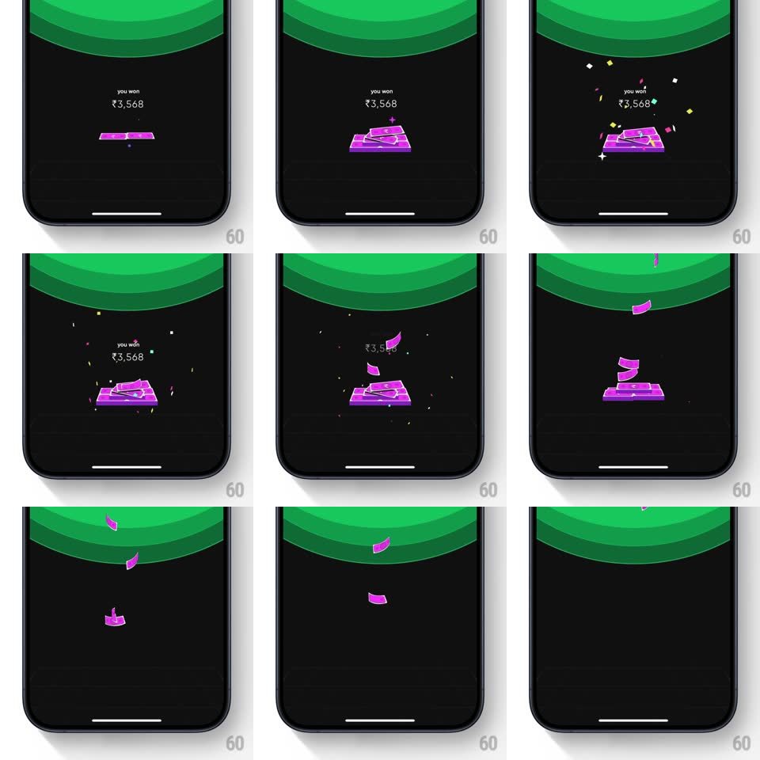

Media
Frame-by-frame

Rebuild this interaction 1:1: CRED's cashback celebration - under a green layered-wave header, a purple "you won ₹3,568" note-stack pops in, confetti bursts around it, then loose notes flutter down one by one, tumbling in 3D until they drift off, leaving the dark screen empty.

Rebuild this interaction 1:1: CRED's cashback celebration - under a green layered-wave header, a purple "you won ₹3,568" note-stack pops in, confetti bursts around it, then loose notes flutter down one by one, tumbling in 3D until they drift off, leaving the dark screen empty. ## Integration Integration: stack-agnostic spec - springs given as stiffness/damping, timed motions as duration + curve; map every value to your framework and animation library of choice. ## Scene Black screen topped by concentric green curved bands (layered waves arcing downward). Center: "you won" over "₹3,568" in white, above a glossy purple stack of currency notes with a paper-clip/rupee motif. ## Motion spec Pattern: staged celebration - pop, confetti, fluttering notes, clear. - The note stack scales in with a bounce (spring ~300/16, ~450ms) as the text fades in above it. - Confetti: a single burst of small squares and diamonds (green, white, yellow) radiates from the stack (~800ms, gravity pulling pieces down, slight rotation per piece). - Notes: 3-4 loose purple notes detach and flutter downward (each on a 2.5-3s fall, swaying side to side ~30px amplitude, tumbling rotation ~180-360deg), staggered ~300ms apart. - The text and stack fade out as the last notes fall (~400ms), ending on the empty wave-topped screen. ## Calibration - Falling notes rotate in 3D (visible foreshortening), not flat 2D spins. - One confetti burst only - the celebration tail is carried by the fluttering notes. ## Reduced motion Stack and text fade in, hold, fade out (300ms each). No confetti or falling notes. ## Don't miss - The green wave header is static - all motion happens below it. - Notes fall at slightly different lateral drifts; no two share a path.